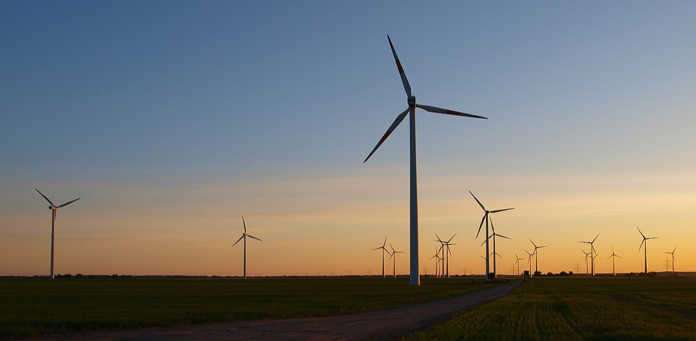
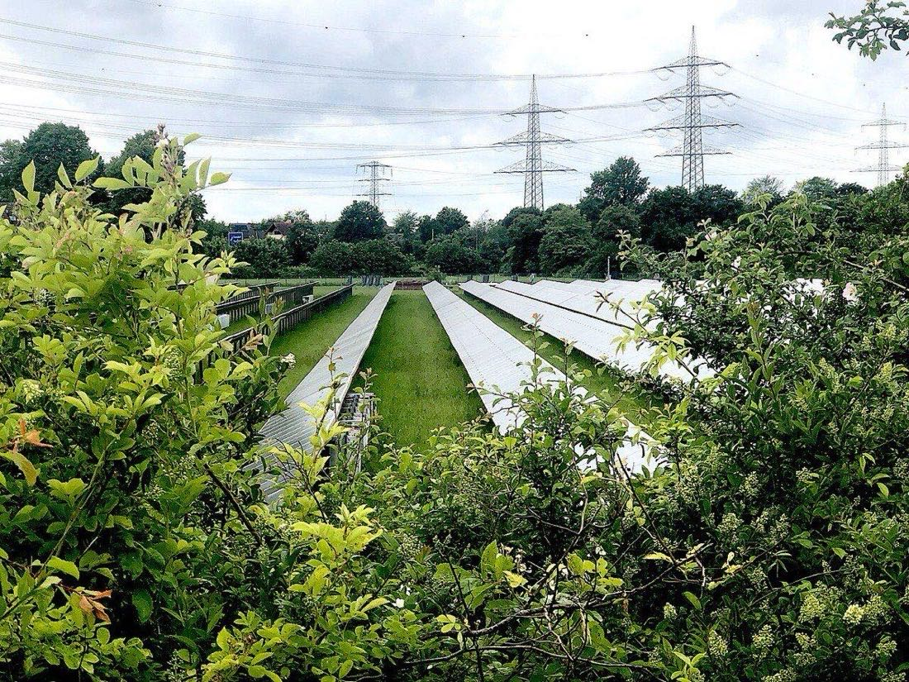
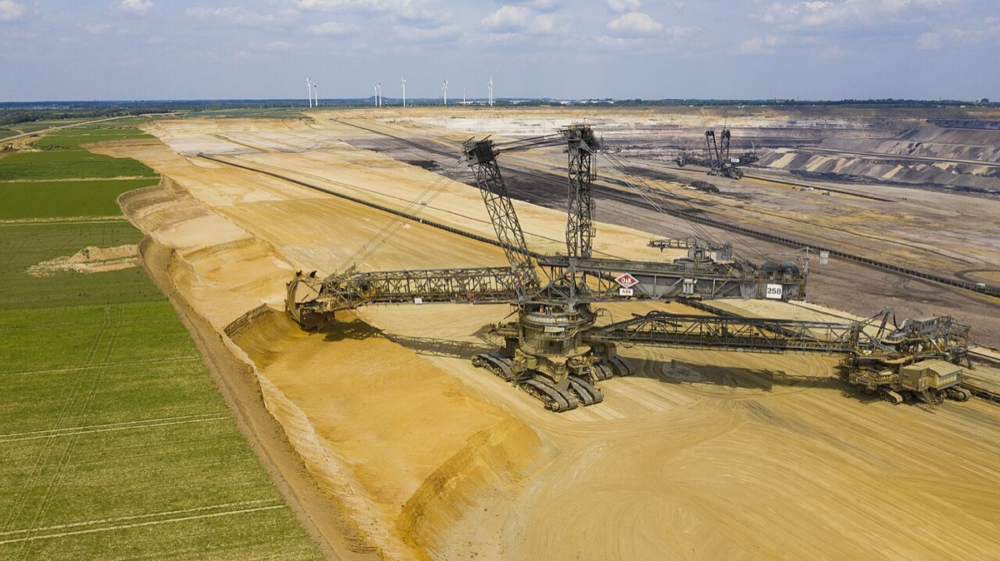
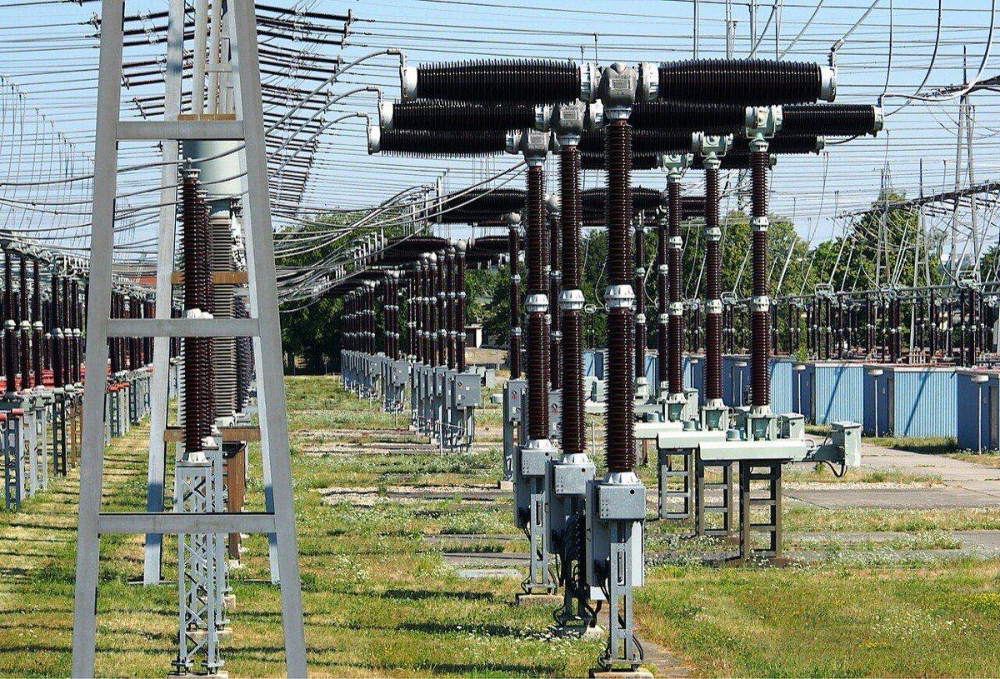
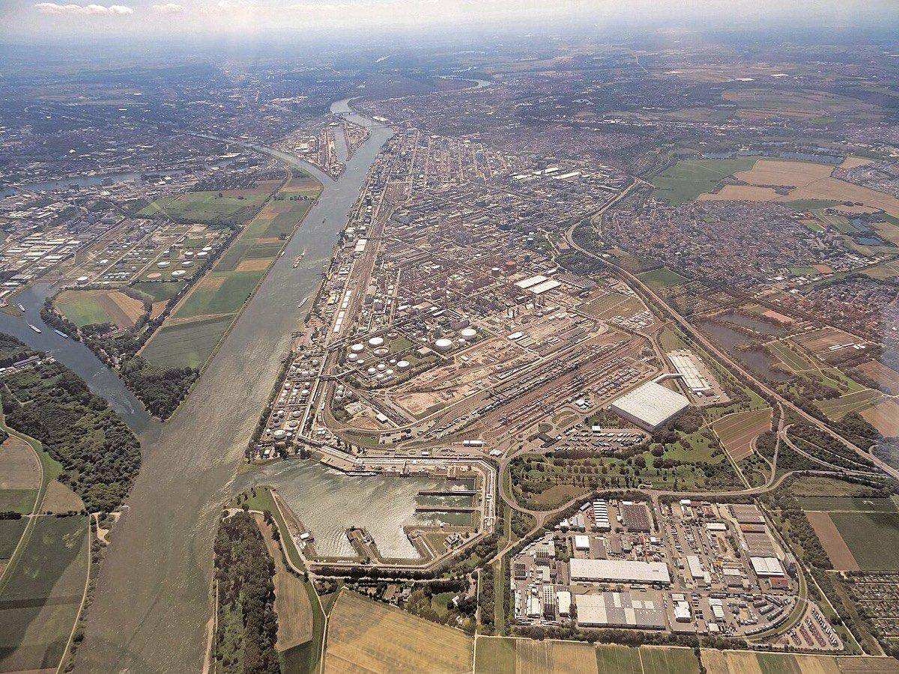
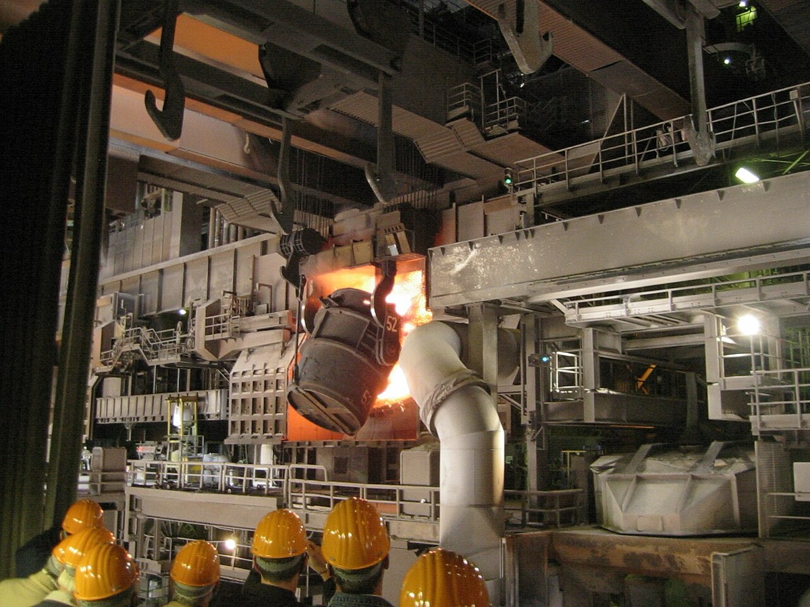
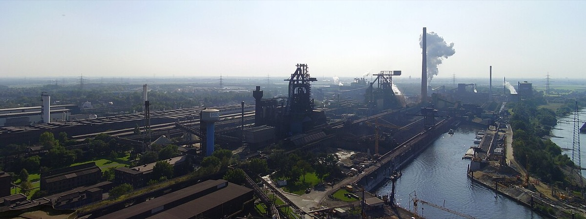
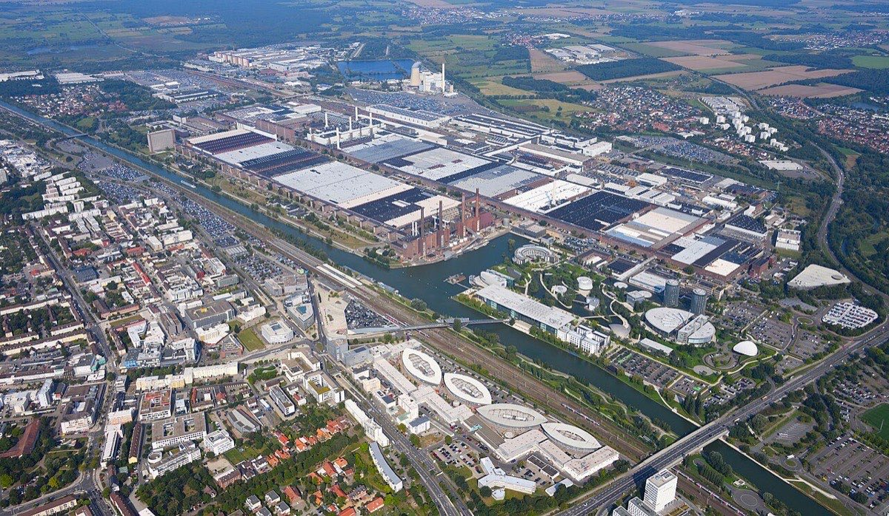
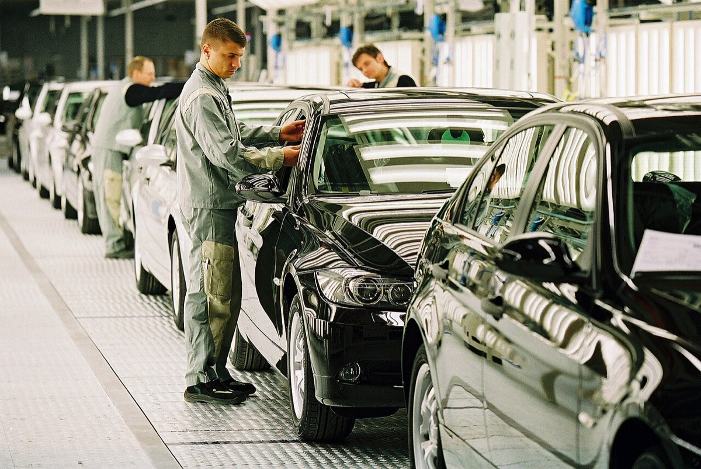

ドイツの産業立地を読むとき、再エネ比率の上昇を集約業種の回復信号に、国内乗用車台数を雇用の回復信号に使うと誤る。本稿は Destatis・Eurostat・VDA の同一年系列で、その二つの読み方を棄却できるかを検証する。訪問国プロファイルではなく、地域横断の特集である。
読者と判断：再エネ比率の上昇をエネルギー集約業種の回復信号に使わない。国内乗用車の台数回復を雇用回復の代理指標に使わない。
分解：物理的制約は、再エネ出力が気象で変動し、産業は安定したkWh単価と容量を必要とすることである。お金の流れは卸価格・ネットワーク料金・税金・賦課金が産業用料金を構成し、自動車は国内台数と国外生産・投資でキャッシュの発生地が分かれることである。利得の帰属は再エネ発電と系統運用、エネルギー集約業種の工場と労働者、完成車メーカーと部品メーカーに分かれる。法と強制力はEEG目標、排出取引、労働協約である。時間は電源構成が年単位、設備投資と雇用調整が投資サイクル単位で動くことである。
産業が必要とするのは「再エネの割合」そのものではない。時間あたりの供給と、支払うkWh単価である。Destatis と Bundesnetzagentur は2024年のネット発電で再エネが約6割と報告する。政策目標（EEG）の基準は総電力消費であり、AGEE-Stat／BMWE の54.4%がそれに対応する1,2,3。
| 系列 | 総量 | 再エネ | 再エネ比率 | 定義の要点 |
|---|---|---|---|---|
| Destatis ネット発電・系統投入 | 431.5 TWh | 256.4 TWh | 59.4% | 風力31.5%。太陽光13.8%。石炭22.5%。原子力0%1 |
| BNetzA／SMARD 実現発電 | 431.7 TWh | 254.9 TWh | 59.0% | オンショア111.9、オフショア25.7、太陽光63.3 TWh2 |
| AGEE-Stat／BMWE | 総消費（改定後） | — | 54.4% | EEG目標の基準。総電力消費に対する再エネ。BMWE現行整理3 |
| 指標 | 2023 | 2024 | 変化 | 出典 |
|---|---|---|---|---|
| Day-Ahead 平均卸価格 | 95.18 €/MWh | 78.51 €/MWh | -17.5% | BNetzA／SMARD2 |
| 負の卸価格が発生した時間 | 301／8,760 | 457／8,784 | 増 | 同上2 |
| 商業輸入 | 54.3 TWh | 67.0 TWh | +23.2% | 同上2 |
| 商業輸出 | 39.0 TWh | 35.1 TWh | -10.1% | 同上2 |
| 年 | 再エネ比率 | 前年差 | ネット発電 | 出典 |
|---|---|---|---|---|
| 2022 | 46.3% | — | 510.2 TWh | Destatis19 |
| 2023 | 56.0% | +9.7pt | 449.8 TWh | Destatis19 |
| 2024 | 59.4% | +3.4pt | 431.5 TWh | Destatis1 |
卸価格の年平均は下がったが、負の価格時間は増えた。商業取引では純輸入が拡大した。再エネ比率の上昇と集約業種生産の関係は章③で同一年系列として検証する。



比較の定義を固定する。系列は Eurostat nrg_pc_205 の非家庭用である。消費帯はバンドID（年2,000–19,999 MWh）。通貨はユーロ。付加価値税等の回収可能税は除く（X_VAT）。卸価格や新規契約平均とは系列が異なる。
| 国 | 2022-S2 | 2023-S2 | 2024-S2 | 2025-S1 |
|---|---|---|---|---|
| ドイツ | 0.1949 | 0.2017 | 0.2076 | 0.1932 |
| フランス | 0.1142 | 0.2032 | 0.1446 | 0.1296 |
| オランダ | 0.2105 | 0.2289 | 0.1961 | 0.1889 |
| オーストリア | 0.1944 | 0.2219 | 0.1790 | 0.1803 |
| ポーランド | 0.1649 | 0.1995 | 0.1878 | 0.1726 |
| 近隣4か国中央値 | 0.1796 | 0.2125 | 0.1834 | 0.1764 |
| ドイツ＞中央値 | はい | いいえ | はい | はい |
単位はユーロ／kWh。出典は Eurostat nrg_pc_205（X_VAT、バンドID）4。中央値は仏・蘭・墺・波の単純中央値である。オーストリアはEurostatがestimatedと付す。
単価条件は半期ごとに切り替わる。2022年後半と2024年後半、2025年前半はドイツが中央値を上回る。2023年後半は下回る。中位帯のバンドICでも2024年後半はドイツ0.2359、フランス0.1785、オランダ0.2110である4。
BDEW の産業向け新規契約平均（160千–2千万 kWh）は2024年に16.99 ct／kWh（前年比約-30%）まで下がったが、新規契約に限定され、Eurostat の全契約平均とは一致しない（single-source）8。

Destatis が「エネルギー集約」とする5業種は次のとおりである。化学。金属の製造・加工。ガラス・セラミック・石材。紙。コークス・石油精製。2021年の製造業粗付加価値に占める合計は16.9%である9。2024年の産業エネルギー消費に占める割合は75.6%である。電力の割合は15.2%。天然ガスは26.3%である5。電力単価は制約の一部である。ガス価格と排出コストも同時に作用する。
| 年 | 再エネ比率 | 再エネの前年差 | 生産指数前年比 | 符号の対応 |
|---|---|---|---|---|
| 2023 | 56.0% | +9.7pt | -11.0% | 不一致（比率↑・生産↓） |
| 2024 | 59.4% | +3.4pt | +0.6% | 一致（両方↑） |
| 2025 | — | — | -2.5% | 再エネ年次未確定 |
再エネは Destatis ネット発電。生産指数はエネルギー集約5業種の年平均（2021=100）の前年比1,16,19。
| 参考（累積） | 値 | 期間 | 出典 |
|---|---|---|---|
| 生産指数の累積変化 | -15.2% | 2022-02 → 2026-03 | Destatis5 |
| 就業者の累積変化 | -53,200（-6.3%） | 同上 | Destatis5 |
| 化学（C20）就業者 | 372千 → 363千 | 2023 → 2024 | Destatis10 |
| 金属製造・加工（C24） | 249千 → 245千 | 2023 → 2024 | 同上10 |
主張1の検証単位は同一年の前年比である。反証条件は「上昇年がすべて生産改善」を求める。2023年は再エネ比率が大きく上がった年であり、生産指数は二桁のマイナスだった。2024年だけを見ると両方プラスだが、2023年の不一致で反証条件は成立しない。したがって主張1は支持である。本稿で照合できた上昇年は2023年と2024年の2年に限られる。



主張2の主検証は2022–2025年の累積である。長期の水準は2018年ピークから並べる。
| 年 | 国内乗用車生産 | 生産前年比 | 年平均雇用 | 雇用前年比 |
|---|---|---|---|---|
| 2018 | 5,120,409 | -9.3% | 833,937 | +1.7% |
| 2019 | 4,663,749 | -8.9% | 832,841 | -0.1% |
| 2020 | 3,515,488 | -24.6% | 808,935 | -2.9% |
| 2021 | 3,096,165 | -12.0% | 786,109 | -2.8% |
| 2022 | 3,480,357 | +12.4% | 774,339 | -1.5% |
| 2023 | 4,109,371 | +18.1% | 779,662 | +0.7% |
| 2024 | 4,069,222 | -1.0% | 772,949 | -0.9% |
| 2025 | 4,148,836 | +2.0% | 731,928 | -5.3% |
生産は VDA。雇用は Destatis 年次報告（原データ。VDA General と同系列）6,7,20。
| 検証区間 | 生産 | 雇用 |
|---|---|---|
| 2022 → 2025 累積 | +19.2% | -5.5% |
| 完成車雇用 2024→2025 | — | -2.1% |
| 部品雇用 2024→2025 | — | -11.1% |
2022–2025年は生産が約67万台増えた一方、雇用は約4.2万人減った。反証条件（a）は満たされない。2024→2025年の減少率の絶対値は部品11.1%、完成車2.1%であり、部品が完成車を上回る。反証条件（b）も満たされない7。国外投資の国内比は補助情報にとどめ、人数の因果分解は残っている問いに残す。


主張1と主張2の結果が、どの主体のキャッシュと雇用に触れるかを整理する。
| 主体 | 観察される利得 | 観察される負担 |
|---|---|---|
| 再エネ発電 | ネット発電シェアの上昇（2022年46.3%→2024年59.4%） | 負の卸価格時間の増加 |
| エネルギー集約業種の企業・労働者 | — | 2023年の生産指数-11.0%。累積でも就業者減 |
| 完成車メーカー | 国内台数の2022–2025年回復 | 年平均雇用の緩やかな減少 |
| 部品メーカーと労働者 | — | 2025年雇用-11.1%（完成車-2.1%より大きい） |
本ページは公開統計の整理であり、投資助言ではない。トルコ国プロファイルは countries/turkiye.html を参照（本稿はドイツ側の産業コストと雇用に限定）。


.jpg){kind=link}